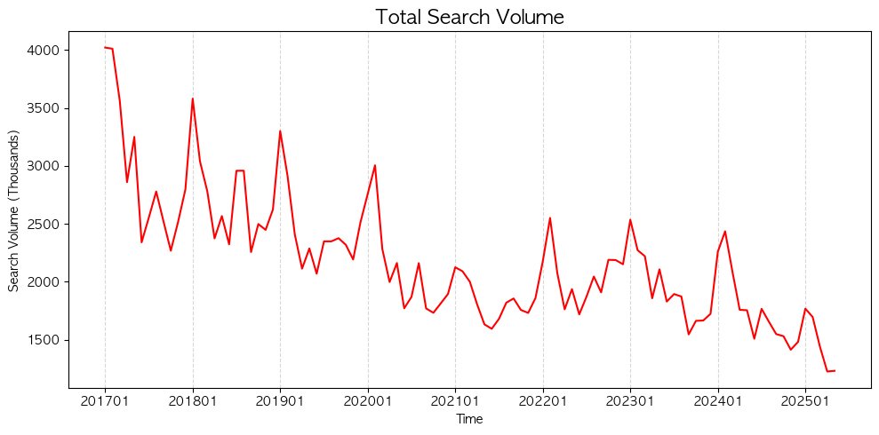

← Back to projects
BANKING · API DATA PIPELINE
Bank Branch Search Analysis
An API-based panel-data project measuring changes in consumer interest as banks reduced their physical branch networks.
MOTIVATION & PROBLEM
Did digital transformation affect interest in physical branches?
As digital banking services expand, many banks around the world have reduced the number of their physical branches. This project explores whether consumer interest in bank branch visits has declined over time in South Korea as the number of physical bank branches has decreased, using search term statistics as a proxy for branch visit behavior.
DATA & METHOD
Data sources
- Bank Branch Data (Korea Federation of Banks 은행현합회)
- Naver Search Trend API
- Naver Datalab Search Trend
Data summary
- Period : 2017.01 - 2025.05
- 8 banks + 3 internet-only banks
Analysis Workflow
- Generated more than 6,000 branch-specific search keywords using branch location information.
- Collected keyword-level search volume data using the Naver Search Trend API.
- Cleaned and reshaped the API responses into a bank-by-time panel dataset.
- Conducted exploratory analysis to examine changes in search interest over time and compare trends across banks.
Tools
Python, Excel, API
RESULTS
What the analysis contributes

INTERPRETATION
What the analysis contributes
Portfolio note: Replace this starter copy with charts, final results, repository links, and a short discussion of limitations.